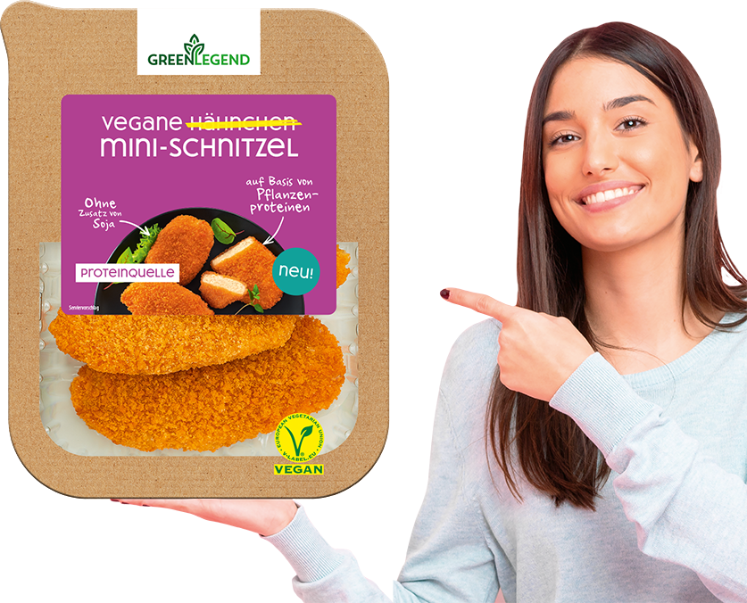
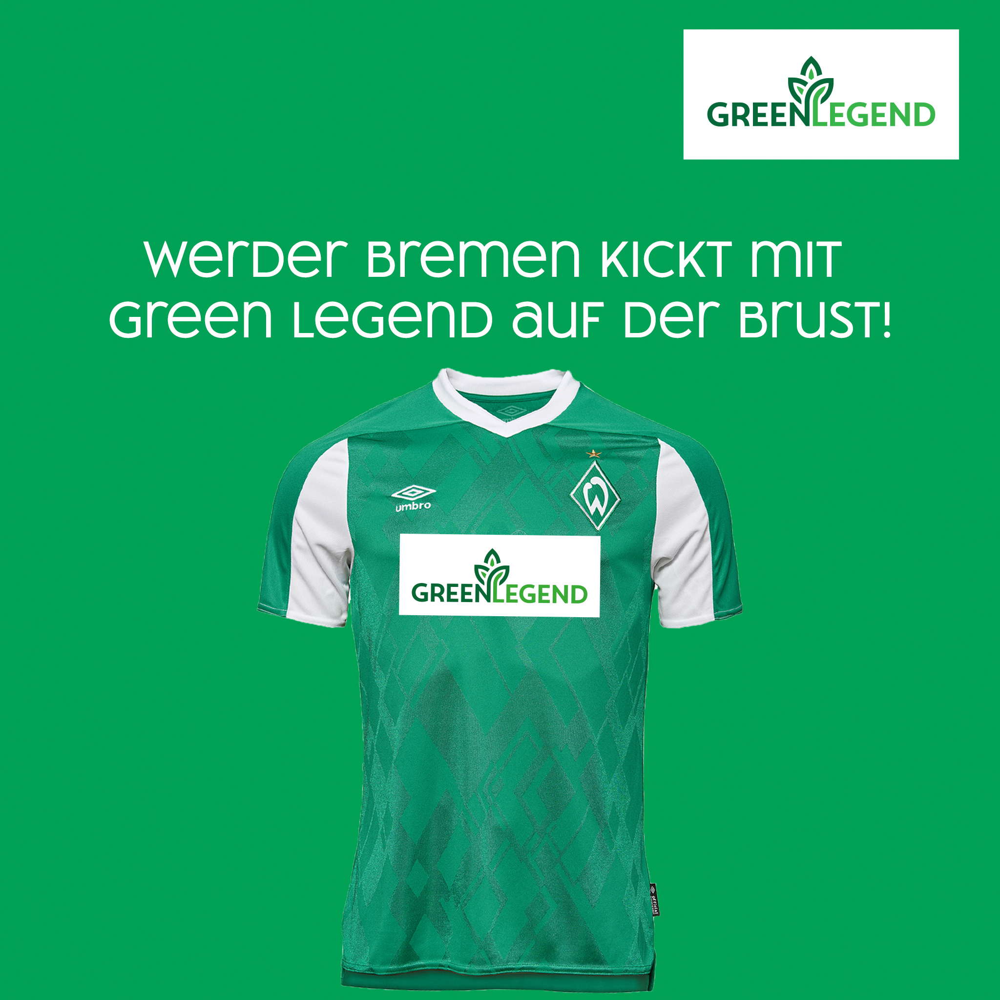
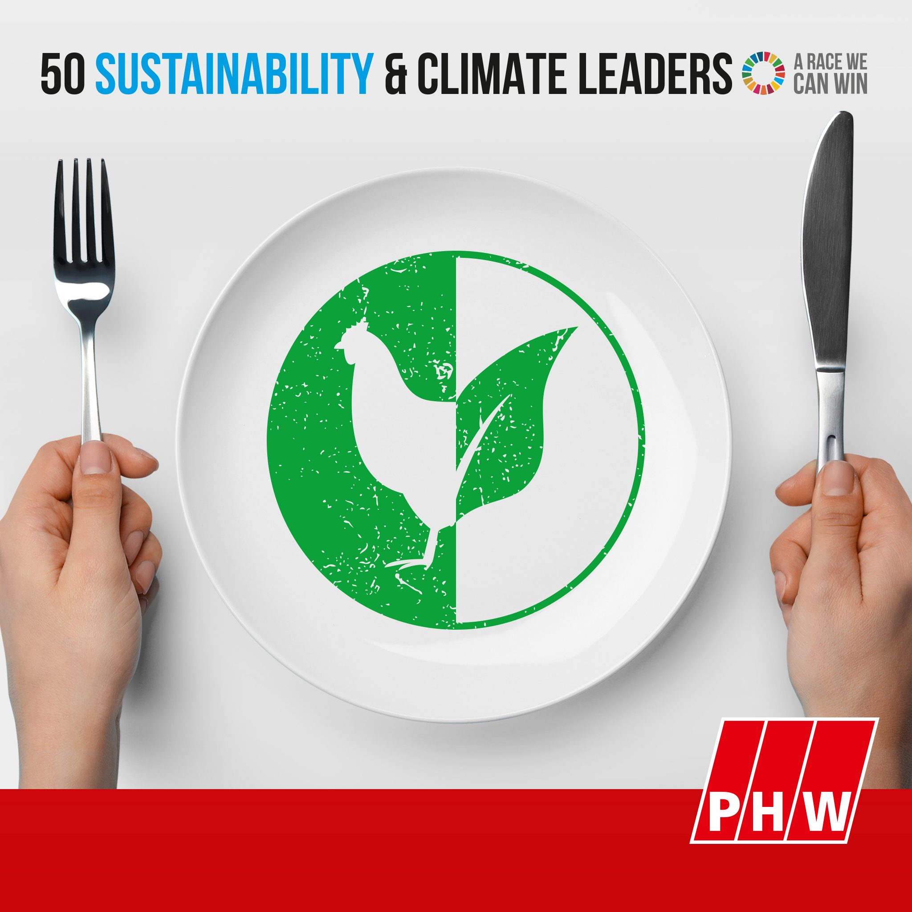
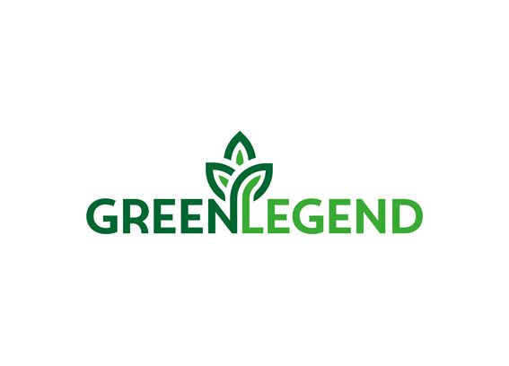

[이데일리 김영수 기자] “지금은 비건 식품 전성시대, 이제는 비건이 트랜드다.” 유럽 대형식품기업 PHW그룹 비젠호프(WIESENHOF)사에서 개발한 식물성 단백질식품 그린레전드(Green Legend)와 한국지사 계약을 체결한 ㈜테스트굿이 국내 대체육 시장에 본격적으로 진출한다. 그린레전드는 비젠호프의 사람, 동물 및 환경에 대한 책임과 품질 및 지속 가능성에 중점을 둔다는 철학에 따라 자연과 함께 건강한 삶을 추구하기 위해 개발됐다. 그린레전드의 식물성고기는 유럽 비건 인증마크를 받았으며 실제로 고기 맛과 식감이 비슷하다. 특히 채식주의자들의 고민이었던 단백질과 영양소의 부족을 보충할 수 있어 건강을 생각하는 많은 소비자들이 찾고 있다. 현재는 독일뿐 아니라 스위스, 오스트리아, 프랑스, 영국, 러시아 등 다양한 유럽 국가에서 판매되고 있다. 그린레전드는 GMO콩을 사용하지 않고 유기농법으로 재배된 천연 원료만을 사용해 만들어진 25가지 종류의 식물성 고기 제품을 판매하고 있으며 지속적으로 상품개발을 진행하고 있다. 국내 시장에는 비건 치킨맛, 피쉬맛, 포크맛 등 6가지 제품을 선보였고 추가로 유기농 콩과 감자로 만든 비건 햄 및 소시지, 아몬드로 만든 비건 치즈 등 지속적으로 제품을 출시될 계획이다 한국무역협회 국제무역통상연구원에 따르면 대체육 식품은 2030년 전세계 육류시장의 30%를, 2040년에는 60%이상을 차지해기존 육류시장 규모를 넘어설 미래식품이라고 내다봤다 ㈜테스트굿 관계자는 “건강에 많은 관심 있는 중장년층들의 비건 소비자 확대로 국내 식물성 대체육 시장은 빠르게 급성장할 것으로 보인다”며 “그린레전드는 고기 없이도 맛있고 간편하게 즐길 수 있는 더 많은 독일산 유기농 프리미엄 식물성 대체육 제품을 시장에 선보일 것”이라고 밝혔다. 이어 “앞으로 국내 비건 시장을 성장시키기 위해 국내 여러 식품유통기업들과의 협업을 통해 많은 소비자들에게 선보일 예정”이라고 덧붙였다 출처: 이데일리 뉴스 기사 https://www.edaily.co.kr/news/read?newsId=02266486629145680&mediaCodeNo=257
green legend
소식
#환경 #동물복지 #비건 #그린레전드 #독일 #유기농
2021년 8월 13일

獨 프리미엄 식물성 대체육 브랜드 ‘그린레전드’, 국내 시장 진출
X
獨 프리미엄 식물성 대체육 브랜드 ‘그린레전드’, 국내 시장 진출
2021년 7월 20일
그린레전드 , 독일 프리미엄 식물성 대체肉 국내 진출
X
獨 프리미엄 식물성 대체육 브랜드 ‘그린레전드’, 국내 시장 진출
[청년투데이=원건민 기자] 유럽 대형식품기업 PHW그룹 비젠호프(WIESENHOF)사에서 개발한 식물성 단백질식품 그린레전드가 독일biz 전문기업 ㈜테스트굿 (대표 박하범)과 한국지사 계약을 체결하고 국내 대체육 시장에 본격적으로 진출한다고 밝혔다. 그린레전드는 비젠호프(WIESENHOF)의 사람, 동물 및 환경에 대한 책임과 품질 및 지속 가능성에 중점을 둔다는 철학에 따라 개발되었다. 그린레전드(Green Legend)의 식물성고기는 유럽 비건 인증마크를 받았으며 실제 고기 맛과 식감이 비슷하며, 특히 채식주의자들의 고민이었던 단백질과 영양소의 부족을 보충할 수 있다. 현재는 독일, 스위스, 오스트리아, 프랑스, 영국, 러시아 등 유럽 국가에서 판매되고 있다. 박하범 대표는 “최근 가치소비를 중시하는 MZ세대를 비롯해 건강에 관심 있는 중년층 의 소비자 확대로 인하여 국내 식물성 대체육 시장은 급성장할 것으로 보인다. 그린레전드는 유기농법으로 재배된 천연원료를 사용한 25가지 종류의 식물성 고기로 국내 식품시장을 선도하는 여러 기업들과의 협업을 통해 고기 없이도 맛있고, 간편하게 즐길 수 있는 식물성 대체육이다”고 말했다. 출처 : 청년투데이(http://www.fnnews21.com)
2021년 3월 31일

가슴의 새로운 로고: Werder Bremen은 Green Legend 로고가 있는 "Veganuary"에서 플레이하고 있습니다.
X
獨 프리미엄 식물성 대체육 브랜드 ‘그린레전드’, 국내 시장 진출
레히터펠트/브레멘, 2021년 1월 2일.새로운 메시지와 함께 연초에: 녹색과 흰색 분데스리가 클럽은 새해 첫 경기를 위해 낯선 유니폼을 입을 것입니다. WIESENHOF 로고 대신 새로운 "Green Legend" 브랜드가 선수의 가슴에 있습니다. 지난 10월 PHW그룹은 식물성 단백질을 기반으로 하는 100% 즐거움을 상징하는 새로운 제품 라인인 Green Legend를 출시했습니다. 저지 캠페인을 통해 PHW Group과 Werder Bremen은 총 6개의 Bundesliga 게임에 대한 언론의 관심을 활용하여 Green Legend가 더 큰 인지도를 얻을 수 있도록 돕고자 합니다. "채식주의자"에 따라 Werderans는 1월 내내 저지에 Green Legend 로고를 사용합니다. Veganuary는 비영리 국제 조직이자 캠페인으로 전 세계 사람들에게 "우리는 Werder Bremen과의 파트너십을 통해 새로운 식물성 제품에 대한 인식을 높일 수 있어 기쁩니다."라고 Dr. Ingo Stryck, PHW 그룹 마케팅 책임자 “우리는 고품질 단백질 제품 공급업체로 점점 더 자신을 포지셔닝하고 있습니다. 이러한 방식으로 우리는 소비자에게 다양한 제품을 제공합니다: 광범위한 가금류 특산품 외에도 2015년부터 자체 비건 채식 제품도 제공하고 있으며, 이는 이제 새로운 Green Legend 제품 라인으로 이상적으로 보완됩니다. "2012년부터 PHW는 WIESENHOF 브랜드가 있는 그룹은 Haupt이며 Werder Bremen의 셔츠 스폰서입니다. “물론 우리는 져지에 이 메시지를 새기는 것을 좋아합니다. Green Legend가 아주 잘 어울립니다. 우리는 가장 중요한 파트너의 발전을 큰 관심을 가지고 관찰하고 있습니다. 당신은 새로운 것을 추진하기를 원하고 우리는 올해 우리 스스로 시작하기를 원합니다. 새롭고 긍정적인 이야기를 쓰는 것입니다. "SV Werder Bremen의 관리 이사회 의장인 Klaus Filbry는 "우리는 1월에 열리는 6개의 Green Legend 게임에서 이를 위한 토대를 마련하고자 합니다."라고 말했습니다. 귀중한 식물성 단백질을 기반으로 한 완전한 즐거움 Green Legend의 특별한 점: 모든 제품은 100% 동물성 성분이 없습니다. 계란, 우유, 유당(유당)이 없습니다. 그린레전드 제품은 순수 식물성으로 고기 본연의 맛을 그대로 즐길 수 있습니다. 또한 시장에 나와 있는 다른 많은 육류 대체 제품과 비교하여 완전 채식 제품에는 콩, 향미 강화제, 야자 지방 또는 코코넛 오일이 포함되어 있지 않습니다. 대신 주요 재료는 완두콩, 잠두콩, 옥수수, 밀과 같은 전통 작물입니다. 신제품의 타겟 그룹은 특히 유연주의자입니다. “저희 제품군의 모토는 고기 없이 즐기되 맛을 포기하지 않는 것입니다. 점점 더 많은 소비자들이 바라는 바입니다. 독일의 약 4,200만 명이 유연주의자입니다. 그 원인, 대체 제품이 사용되는 데는 여러 가지 이유가 있습니다. 그러나 한 가지 확실한 것은 육류 대체 제품의 전체 시장이 급성장하고 있다는 것입니다. 2020년 상반기 매출 전년 동기 대비 64.9% 증가[1] - 우리는 이 시장 부문에서 여전히 많은 잠재력을 보고 있습니다.”라고 Dr. Ingo Stryck, PHW 그룹 마케팅 책임자 또한 대체 제품은 사용성 측면에서 원본보다 열등하지 않습니다. 새로운 제품은 고전 요리와 창의적인 요리에 똑같이 적합합니다. 모든 채널의 친환경 전원 새로운 Green Legend 브랜드는 Werder Bremen을 통해서만 알려진 것이 아닙니다. 관심을 끄는 동영상 캠페인은 특히 젊은 대상 그룹에서 필요한 도달 범위를 생성하기 위해 TV와 소셜 미디어에서 디지털 방식으로 재생됩니다. 또한 초기에는 인플루언서들과의 콜라보레이션도 진행했다. 또한 판매 시점에 눈길을 사로잡는 특별 디스플레이와 전단지 광고가 있을 것입니다. Veganuary의 일환으로 Green Legend Instagram 계정 "greenlegend_official"에서 1월 완전채식을 위한 대회 및 레시피 아이디어가 있습니다. 판매 시점의 플랜트 전력 2020년 10월 1일부터 PHW 그룹은 Green Lebend 브랜드의 식물을 기반으로 신선 및 냉동 지역을 위한 5가지 비건 소시지 제품과 6가지 육류 및 생선 대안을 제공하고 있습니다. Lower Saxony의 가족 회사는 의식적으로 때때로 고기나 생선 대신 야채 대안을 찾는 유연한 사람들을 목표로 삼고자 합니다. 제품은 Kaufland, Edeka Rhein-Ruhr, Edeka Minden, Edeka Südwest, Norma, Netto(2021년 3월 주) 및 Amazon Fresh(뮌헨, 베를린 및 함부르크 지역)에서 구입할 수 있습니다. 대체 단백질 공급원의 사업 영역에 대한 PHW 그룹의 추가 정보는 현재 지속 가능성 보고서에서 확인할 수 있습니다. https://www.wiesenhof-online.de/katalog/NACHHALTIGKEITSBERICHT-2019/ 자세한 내용은: Engel & Zimmermann AG 커뮤니케이션을 위한 비즈니스 컨설팅 다리아 코왈릭 Fußberg 성, Am Schlosspark 15, 82131 Gauting 전화: 089/89 35 63 3 이메일: d.kowalik@engel-zimmermann.de 출처: IRI 심포니 채식주의자 데이터베이스, 2020.
2021년 1월 2일

국제적 인정: PHW 그룹은 전 세계 "50 지속 가능성 및 기후 리더" 중 하나입니다.
X
국제적 인정: PHW 그룹은 전 세계 "50 지속 가능성 및 기후 리더" 중 하나입니다.
Rechterfeld, 2020년 12월 8일. 지속 가능성과 기후 보호를 향한 우리의 길을 단호하게 계속할 동기를 부여합니다." 고품질 단백질 제품 공급업체 다양성을 통한 성장 - 이것이 PHW 그룹이 의미하는 것입니다. 이미 3세대에 걸쳐 운영되고 있는 가족 회사의 핵심 사업은 고품질 가금류 특산품의 생산 및 마케팅입니다. 2017년부터 회사는 한 걸음 더 나아가 대체 단백질 공급원 사업을 만들었습니다. “우리는 영양의 미래를 가능한 한 다양하고 지속 가능하게 만들고 그것이 동물성 단백질이든 식물성 단백질이든 관계없이 고품질 단백질 제품의 공급자로 자리 매김하고자 합니다. 이것은 우리가 식물성 식품 부문의 성장을 기존 사업 영역에 대한 위협이 아니라 기회로 보고 있음을 의미합니다”라고 Peter Wesjohann은 말합니다. “현재 추정치에 따르면 2050년에는 지구 인구가 약 100억 명이 될 것입니다. 단백질의 필요성은 빠르게 증가할 것입니다. 기존 육류 생산만으로는 추가 수요를 충족할 수 없음이 분명합니다. 우리의 목표는 지속 가능한 동물 복지, 건강 또는 사회적 이유를 위해 전체 또는 부분적으로 식물성 식단을 결정하는 개발도상국에 최신 식물성 제품을 제공하는 것입니다." 기후 중립 등대 프로젝트 지속 가능성 노력의 핵심은 현재 기후 중립 경제입니다. 이 회사는 올해 초에 녹색 이정표에 도달했습니다. 2020년부터 가족 회사는 ZNU "지속 가능한 관리" 표준에 따라 인증을 받은 독일 WIESENHOF 6곳에서 100% 기후 중립적인 제품을 생산하고 있습니다. “'ZNU가 제로화' 이니셔티브에 참여하기로 결정했을 때 즉시 100% 기후 중립이 되기를 원한다는 것이 분명했습니다. PHW Group의 지속 가능성 관리 책임자인 Katrin Metschies는 "그래서 구현하기 더 쉬운 단계별 보상을 생략했습니다."라고 설명합니다. 이 회사는 최근 또 다른 주요 조치를 취했습니다. 12월 초부터 PHW 그룹은 기후 중립적인 방식으로 식품 소매점에서 양념을 하지 않은 모든 WIESENHOF 닭고기 및 칠면조 제품을 제공하고 있습니다. 셀프 서비스로 포장된 신선한 제품으로 시작합니다. 중기 목표는 모든 WIESENHOF 브랜드 제품을 기후 중립적으로 만드는 것입니다. 또한, 회사는 장기적으로 PHW 브랜드의 전체 포트폴리오에 걸쳐 기후 중립 제품의 수를 확대할 계획입니다. 또한 PHW 그룹은 2008년 전체 생산 사슬에서 닭고기에 대한 CO2 배출량을 측정한 가금류 업계 최초이자 지금까지 유일한 회사였으며 따라서 선구자적 역할을 담당하고 있습니다. 현재까지 PHW 그룹은 전체 CO2 발자국을 총 6회 기록했습니다. 이 데이터 기반은 목표 측정을 위한 최적의 기반을 형성하며, 추가 정보: PHW 그룹의 지속 가능성 목표에 대한 추가 정보는 현재 지속 가능성 보고서( https://www.phw-gruppe.de/nachhaltigkeit) 와 PHW 그룹 비디오에 대한 직접 링크 https://www에서 찾을 수 있습니다. .phw-gruppe.de/ 지속 가능성 / # 비디오 다음은 "50 Sustainability & Climate Leaders" 웹사이트에 대한 링크입니다. PHW: 미래를 위한 식량 공급 추가 정보: Engel & Zimmermann AG 커뮤니케이션 관리 컨설팅 Daria Kowalik Schloss Fußberg, Am Schlosspark 15, 82131 Gauting 전화: 089/89 35 633, 팩스: 089/89 39 84 29 이메일: d.kowalik@engel-zimmermann.de
2021년 1월 22일

PHW, 새로운 채소 연구 발표
X
국제적 인정: PHW 그룹은 전 세계 "50 지속 가능성 및 기후 리더" 중 하나입니다.
모든 두 번째 사람은 유연 식단을 먹거나 육류를 완전히 포기합니다 / 지속 가능성, 동물 복지 및 건강 측면이 육류를 먹지 않는 주요 이유입니다 / 대체 제품에는 유전 공학, 야자 지방 및 향미 증진제가 없어야 합니다 / 유연주의자가 육류를 먹는다면 가금류는 가장 인기있는 2021년 1월 레히터펠트. 고기 없는 버거, 야채 냉햄 또는 생선 대체 제품: 점점 더 많은 회사에서 대체 단백질 공급원으로 만든 식품을 제공하고 있습니다. PHW 그룹은 2015년부터 이 부문에서 활동해 왔으며 최근에는 새로운 Green Legend 제품 라인을 제품군에 추가했습니다. 그러나 얼마나 많은 사람들이 고기를 전혀 먹지 않으며, 유연주의자, 채식주의자 또는 완전 채식주의자가 고기를 먹지 않기로 결정하는 이유는 무엇입니까? 가장 인기 있는 육류 대체품은 무엇이며 구매할 때 무엇이 중요합니까? 최초의 대표 채소 연구에서 PHW 그룹은 이러한 질문을 조사하고 "채식"에 따라 결과를 제시했습니다. 이를 위해 2020년 11월 16일부터 27일까지 여론조사기관 forsa에서 독일인 1,003명을 대상으로 설문조사를 실시했다. 플렉시테리언이 부상하고 있다 독일에서는 2명 중 1명(53%)이 적어도 때때로 의도적으로 육류 제품 사용을 자제합니다. 여기의 모토는 대다수를 위한 것입니다. 유연성입니다. 응답자의 44%는 자신의 식단을 유연하다고 말했으며 8%는 자신을 채식주의자로, 1%만 완전 채식주의자로 생각했습니다. 특히 성별 의 차이 가 관찰될 수 있습니다. 설문에 응한 여성의 약 2/3(63%)는 적어도 가끔 고기 없는 식단을 섭취하는 반면 남성의 43%는 그렇게 합니다. 그럼에도 불구하고 연령 은 식습관에 중요한 역할을 합니다. 채식주의자와 채식주의자의 비율은 특히 젊은 세대에서 더 높으며 연령이 증가함에 따라 꾸준히 감소합니다. 조사에 응한 18~29세 중 14%가 채식주의자이고 3%가 완전채식인 반면, 60~75세 중 5%만이 자신을 채식주의자라고 설명하며 완전 채식주의자는 정적으로 무시할 수 있습니다(0%). 반면에 플렉시테리언주의는 고령이 되면서 더 대중화됩니다. 18-29세의 35%가 플렉시테리언이고 60-75세의 비율은 55%로 증가합니다. 지역적으로 는 약간의 차이만 있고 전반적으로 균형 잡힌 분포를 나타냅니다. 동부에서는 유연주의자(41%)와 채식주의자(5%)의 비율이 가장 낮지만 중간(플렉시테리언: 46%, 채식주의자: 9%) ; 채식주의자: 1%) 그리고 공화국 남부(유연주의자: 45%, 채식주의자: 10%, 완전 채식주의자: 1%)에서 이 그룹의 비율이 약간 더 높습니다. 또한, 지역 의 크기는 채식주의자의 비율과 양의 상관관계가 있으며, 인구가 증가함에 따라 더 많은 사람들이 자신의 식단을 채식주의자로 기술합니다(20,000명 초과: 6%, 거주자 500,000명 미만: 12%). 이것은 식품 무역과 제품 범위에 대한 중요한 지표가 될 수 있습니다. 플렉시테리언(Flexitarians) 사이에 도시와 농촌 지역 사이에는 큰 차이가 없습니다(> 20,000명의 주민: 45%; <500,000,000명의 주민: 42%). 시 는 오는 순 가구 소득, 고기에서 기권의 측면에서 가장 작은 차이에있다 : flexitarians의 비율은 2,000 유로 (40 %) <의 순 소득 가구에서 유사하다 46 % (유로 2000 사이 4,000 ) 및> 4,000유로(41%). 채식주의자에게도 동일하게 적용됩니다(2,000유로 미만: 3%, 2,000~4,000유로: 0%, 4,000유로: 1%). 채식주의자 사이에서만 더 분명한 차이를 관찰할 수 있습니다. 소득이 2,000유로 미만인 가구의 14%가 자신을 채식주의자라고 설명하고 다른 두 계층의 7%는 그렇게 합니다. 1인 또는 2인 이상의 소규모 가구는 4인 이상의 다인 가구보다 식단(44% 및 47%)과 채식주의자(10% 및 9%)에서 더 유연한 경향이 있습니다. 이러한 가구 규모의 평균에 비해 유연주의자는 37%, 채식주의자는 5%로 과소 대표됩니다. 그래서 접시에 고기가 나오지 않는다. "그리고 왜 고기 없는 식단을 먹나요?" - 채소 연구도 이 질문에 대한 답을 제공합니다. 세 가지 주요 이유가 나타납니다. 응답자의 60%가 지속 가능성과 동물 복지를 언급했으며, 49%는 건강 측면이 결정적이었습니다. 인구 통계학적 특성도 여기서 중요한 역할을 합니다. 18~29세의 젊은 세대는 주로 지속 가능성과 환경 보호를 채식주의 또는 완전 채식주의 식단의 이유로 꼽았습니다(80%). 그러나 나이가 들어감에 따라 건강 측면이 더 결정적이며 60-75세에서는 64%가 가장 많은 항목을 차지하며 육식을 기피하는 성별에 따라 우선 순위가 다릅니다. 남성(59%)과 여성(60%)은 여전히 지속 가능성 주제에 동의합니까? 육식을 하지 않는 주된 이유는 여성의 동물복지(65%~52%)와 남성의 경우 건강(55%~45%) 때문입니다. 간혹 배우자나 다른 식구 등 제3자의 동기(15%)가 육식을 하지 않는 이유로 제시되기도 했다. 남성 23%, 여성 9%가 그 이유를 꼽았다. 미각(4%), 육식에 대한 약간의 식욕(2%), 습관(2%) 또는 가격(1%)은 거의 제공되지 않았다. 이 고기 대용품이 가장 인기가 있습니다. 단백질은 필수 영양소 중 하나이며 균형 잡힌 식단의 일부입니다. 유연한 식단, 채식주의자 또는 완전채식 식단에서도 마찬가지입니다. 대체 단백질원으로 만든 육류 대체품은 단백질 함량 면에서 육류와 유사할 뿐만 아니라 맛이나 식감 면에서도 결코 열등하지 않습니다. 설문에 응한 유연주의자, 채식주의자 및 완전 채식주의자의 절반은 이미 식단에 대체 제품을 사용하고 있습니다. 가장 인기 있는 것은 저렴한 두부(22%), 다용도의 고기 없는 다진 고기(20%) 및 냉햄(18%)입니다. 슈니첼(14%), 버거(13%), 소세지(13%), 미트볼(12%), 너겟(12%), 얇게 썬 고기(11%), 튀긴 소시지의 대체품은 비슷한 뒤 인기도(9%). 이러한 새로운 육류 대체품은 여성, 젊은이 및 도시 인구에게 더 인기 있는 경향이 있습니다. 대체 제품 없이 육식을 하지 않는 식단으로 단백질 요구 사항을 충족하기 위해 플렉시테리언, 채식주의자 및 비건은 주로 감자(77%), 견과류 및 커널(77%) 또는 쌀(63%)과 같은 식물성 단백질 공급원을 사용합니다. 선호하는 노인 인구 집단에서 더 흔한 경향이 있습니다. 그 뒤를 완두콩(49%), 밀(30%), 옥수수(27%), 콩(23%), 버섯 작물(18%), 밭콩(13%), 버섯을 제외한 , 주로 젊은 세대에서 선택되는 경향이 있습니다. 특히 단백질의 대체 공급원으로 잘 알려진 대두는 38%로 젊은 사람들에게 특히 인기가 높으며 44%는 완전 채식주의자 및 채식주의자에게 인기가 있습니다. 반면에 유연주의자의 경우 콩은 18%에 불과한 선호하는 단백질 공급원이 아닙니다. 유연주의자들 사이에서 가장 인기 있는 것은 감자(79%), 견과류 및 커널(76%) 또는 쌀(65%) 및 완두콩(47%)입니다. 플렉시테리언이 육류를 선호한다면 가금류 제품을 선호합니다(78%). 그 다음이 생선(70%), 쇠고기(68%), 돼지고기(45%), 양고기(26%)입니다. 성분에 따라 다릅니다 대체 제품이 접시에 나오면 소비자가 구매할 때 "육류 대체품은 단순한 육류 대체품이 아니다"라는 모토가 적용됩니다. 조사 대상의 약 3/4(72%)은 유전자 조작 없이 제품을 제조하는 것이 최소한 중요하다고 생각합니다. 비슷한 값으로 뒤를 이어 야자 지방이 없는 특성(매우 중요: 33%, 중요: 35%)과 향미 강화제가 없는 특성(매우 중요: 37%, 중요: 29%)이 있습니다. 대체 제품이 완전 채식주의자라는 사실, 즉 계란과 같은 동물성 성분을 포함하지 않는다는 사실은 소비자의 4분의 1 이상(26%)이 구매 결정에 중요하거나 매우 중요합니다. 남부 독일(32%)과 18세에서 29세 사이(34%)에서 설문 조사 대상의 약 3분의 1이 이것이 중요한 역할을 했으며 대다수의 채식주의자와 완전 채식주의자(79%)에게 동물성 성분을 완전히 피하는 것이 중요합니다. 결정적인 . 조사 대상의 5분의 1 미만이 육류 대체 제품에 콩을 포함해서는 안 된다고 답했습니다(19%). 무엇보다 노인(28%), 농촌(28%), 남부 독일(27%)이 그렇게 본다. 제품에 글루텐이 없다는 사실은 조사 대상의 14%에게 여전히 중요하거나 매우 중요합니다. 이 측면은 노인의 약 4분의 1(24%)에게 중요하거나 매우 중요합니다. 농촌 인구(28%)와 남부 독일인(27%)이 이와 같습니다. 제품에 글루텐이 없다는 사실은 조사 대상의 14%에게 여전히 중요하거나 매우 중요합니다. 이 측면은 노인의 약 4분의 1(24%)에게 중요하거나 매우 중요합니다. 농촌 인구(28%)와 남부 독일인(27%)이 이와 같습니다. 제품에 글루텐이 없다는 사실은 조사 대상의 14%에게 여전히 중요하거나 매우 중요합니다. 이 측면은 노인의 약 4분의 1(24%)에게 중요하거나 매우 중요합니다. 참고: 질문에 대한 모든 가능한 답변이 채소 연구에서 언급되고 평가되는 것은 아닙니다. 어떤 경우에는 해석이 가장 빈번하고 드문 답변과 관련이 있습니다. 관심이 있는 경우 전체 답변 옵션을 요청하십시오. 제공된 정보 그래픽도 참고하십시오. * PHW그룹은 본 조사를 시장조사기관 forsa에 의뢰하였습니다. 연구를 위해 독일에서 18세에서 75세 사이의 총 1,003명을 인터뷰했습니다. 조사 기간은 2020년 11월 16일부터 27일까지였다. PHW 그룹 및 Green Legend 제품군에 대한 추가 정보는 www.phw-gruppe.de 및 www.green-legend.com에서 확인할 수 있습니다. 자세한 내용은: Engel & Zimmermann AG 커뮤니케이션 관리 컨설팅 Daria Kowalik; Daniele Maier Schloss Fußberg, Am Schlosspark 15, 82131 Gauting 전화: 089/89 35 63 3 이메일: d.kowalik@engel-zimmermann.de; d.maier@engel-zimmermann.de
2021년 1월 2일
PHW Group, 새로운 식물성 식품 브랜드 소개: "Green Legend"는 육류에 대한 식물성 기반 솔루션
X
PHW Group, 새로운 식물성 식품 브랜드 소개: "Green Legend"는 육류에 대한 식물성 기반 솔루션
RPHW Group, 새로운 식물성 식품 브랜드 소개: "Green Legend"는 육류에 대한 식물성 기반 솔루션 Rechterfeld, 2020년 9월. 귀중한 식물성 단백질을 기반으로 한 100% 현대적인 즐거움 - 이것이 Green Legend의 새로운 제품군이 의미하는 것입니다. 10월 1일부터 PHW 그룹은 식물을 기반으로 한 신선한 부문을 위해 5가지 비건 소시지 제품과 6가지 육류 및 생선 대안을 제공할 예정입니다. Lower Saxony의 가족 회사는 의식적으로 때때로 고기나 생선 대신 야채 대안을 찾는 유연한 사람들을 목표로 삼고자 합니다. 그리고 맛이 결정적인 기준입니다. “우리의 새로운 Green Legend 제품은 원본에 매우 가까운 맛 경험을 제공합니다. 모두 식물 기반 제품의 최신 세대에 해당합니다. 우리는 고품질 단백질 제품의 공급업체로 자리매김하고 있습니다. 우리의 신조는 항상 '다양성을 통한 성장'이었습니다. 다양한 가금류 특선 요리 외에도 우리는 2015년부터 자체 비건 제품을 제공하고 있습니다. 이 제품은 이제 새로운 식물성 제품으로 이상적으로 보완됩니다. 대체 단백질 공급원의 비즈니스 분야에서 PHW 그룹의 접근 방식은 네 가지 기둥을 기반으로 합니다. 첫 번째 기둥은 현재 Green Legend 제품군을 포함하는 회사 자체의 비건 제품입니다. 두 번째 기둥은 판매 파트너십을 기반으로 합니다. 또한 PHW 그룹은 전략적 투자에 투자합니다. 네 번째 기둥에는 LiveKindly와 PHW 그룹 간의 Green Meadows 합작 투자 설립이 포함됩니다. 대체 단백질 공급원에 대한 PHW 보드. 대체 단백질 공급원의 비즈니스 분야에서 PHW 그룹의 접근 방식은 네 가지 기둥을 기반으로 합니다. 첫 번째 기둥은 현재 Green Legend 제품군을 포함하는 회사 자체의 비건 제품입니다. 두 번째 기둥은 판매 파트너십을 기반으로 합니다. 또한 PHW 그룹은 전략적 투자에 투자합니다. 네 번째 기둥에는 LiveKindly와 PHW 그룹 간의 Green Meadows 합작 투자 설립이 포함됩니다. 대체 단백질 공급원에 대한 PHW 보드. 대체 단백질 공급원의 비즈니스 분야에서 PHW 그룹의 접근 방식은 네 가지 기둥을 기반으로 합니다. 첫 번째 기둥은 현재 Green Legend 제품군을 포함하는 회사 자체의 비건 제품입니다. 두 번째 기둥은 판매 파트너십을 기반으로 합니다. 또한 PHW 그룹은 전략적 투자에 투자합니다. 네 번째 기둥에는 LiveKindly와 PHW 그룹 간의 Green Meadows 합작 투자 설립이 포함됩니다. 11명의 녹색 주인공 다양한 경우와 맛을 위한 즐거움: 식물성 단백질 로 만든 5가지 비건 소시지 - 비건가금류모르타델라 , 비건가금류 모르타델라 고추 , 비건가금류 살라미 소시지 , 비건가금류 고기 소시지 , 비건가금류 Wiener - Green Legend는 70% 이상의 재생 가능한 원료로 구성된 눈길을 끄는 색상 디자인 포장으로 소시지 선반에 강한 자극을 줄 것입니다. 신선 부문에는 생선에 대한 두 가지 대안인 완전채식 을 포함하여 6가지 식물성 제품이 있습니다.육체 미니 미트볼 , 비건닭 미니 슈니첼 , 비건닭 배터 너겟 , 비건닭 스틱 , 비건생선 젓가락 과 채식주의자생선 반죽 덩어리 . 신선 제품의 포장 트레이는 70% 재활용 재료로 구성되어 있으며 진열 상자는 100% 재활용 가능합니다. 귀중한 식물성 단백질을 기반으로 한 완전한 즐거움 Green Legend의 특별한 점: 모든 제품은 100% 동물성 성분이 없습니다. 계란, 우유, 유당(유당)이 없습니다. Green Legend 제품은 순전히 식물성 즐거움이지만 원래 고기의 풍미가 가득합니다. 또한 시장에 나와 있는 다른 많은 육류 대체 제품과 비교하여 완전 채식 제품에는 콩, 향미 강화제, 야자 지방 또는 코코넛 오일이 포함되어 있지 않습니다. 대신 주요 재료는 완두콩, 잠두콩, 옥수수, 밀과 같은 전통 작물입니다. 신제품의 타겟 그룹은 특히 유연주의자입니다. “저희 제품군의 모토는 고기 없이 즐기는 것입니다. 전설적인 맛입니다. 점점 더 많은 소비자들이 바라는 바입니다. 독일의 약 4,200만 명이 유연주의자입니다. 그 원인, 대체 제품이 사용되는 데는 여러 가지 이유가 있습니다. 그러나 한 가지 확실한 것은 육류 대체 제품의 전체 시장이 급성장하고 있다는 것입니다. 2020년 상반기 매출 전년 동기 대비 64.9% 증가[1] - 우리는 이 시장 부문에서 여전히 많은 잠재력을 보고 있습니다.”라고 Dr. WIESENHOF의 마케팅 이사 Ingo Stryck. 또한 대체 제품은 사용성 측면에서 원본보다 열등하지 않습니다. 새로운 제품은 고전 요리와 창의적인 요리에 똑같이 적합합니다. 모든 채널의 친환경 전력 - 경기장에서도 Green Legend 제품의 도입은 눈길을 사로잡는 방식으로 지원됩니다. 새로운 동영상 캠페인이 45주차에 시작됩니다. 센터피스는 귀중한 식물성 단백질을 기반으로 한 100% 현대적 즐거움이라는 메시지가 담긴 27초 지점입니다. 이것은 특히 젊은 대상 그룹에서 필요한 도달 범위를 생성하기 위해 소셜 미디어에서 동시에 디지털 방식으로 재생됩니다. 또한 인플루언서들과의 파트너십도 합의했습니다. 또한 눈길을 사로잡는 특별 전시와 판매 시점에서 경쟁이 있는 전단지 광고도 있을 것입니다. 후원 파트너인 베르더 브레멘(Werder Bremen)과 함께 소개하기 위해 대규모 특별 캠페인을 계획하고 있다. 고기 없이 온전히 본연의 맛을 즐길 수 있습니다. 콩, 야자 지방 및 향미 증강제 없음. 전설의 맛! Green Legend의 신제품에 대한 자세한 내용은 새 웹사이트 에서 확인할 수 있습니다 . [1] 출처: IRI 심포니 채식주의자 데이터베이스, 2020.